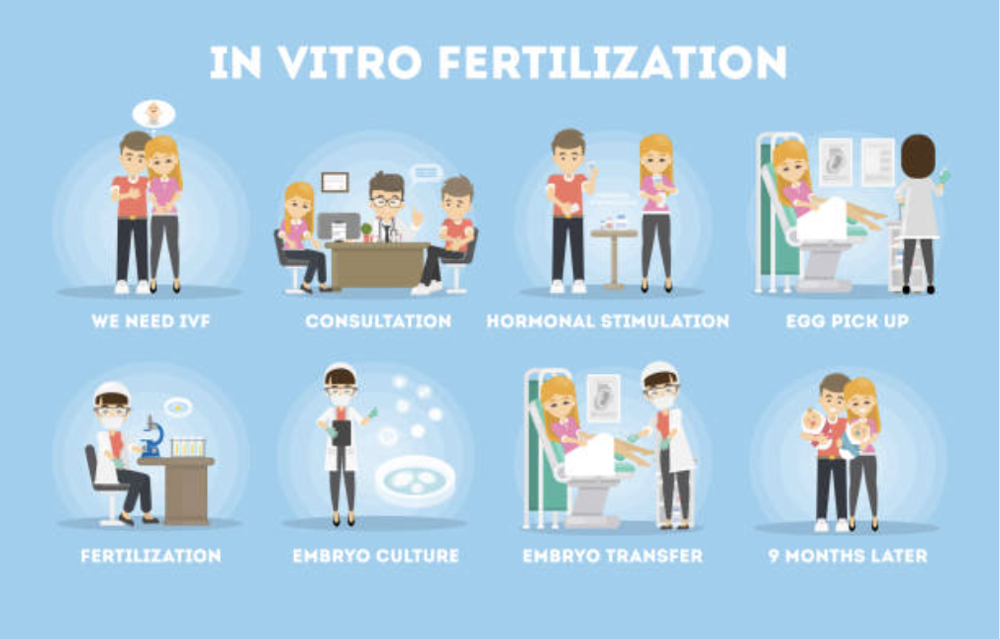

In Vitro Fertilization is a series of complex procedures to help with fertility and genetic testing to help prevent genetic problems and provide a means to concieve children. During IVF mature eggs are harvested from the mother's ovaries and then taken to be fertilized by sperm in a controled evnironment like a lab. Then the fertilized egg (embryo) or eggs are transferred to a uterus. One full cycle of IVF is about three weeks. These steps can be separated into different parts so the process can be longer or shorter.
IVF is one of the most successful reproductive technologies. IVF can be done using a couples own egg and sperm. IVF can also be done by an anonymous or known donor of egg and sperm.
The chances of having a healthy baby using IVF depend on many factors. Age and the cause of infertility. IVF can also be expensive, time consuming, and invasive. IVF can also yeild multiple births if multiple embbryos are planted in the uterus. This can be a happy surprise for some but for others with unicornuate uterius this can be catasrophic.
Always consult a doctor on understanding the risks of IVF and the procedures before moving forward for your infertility needs. One of the most trusted infertility doctors that I have the had the privilge to use and work with is Docot Moore. Please click button above to be redirected to there webpage and schedule a Consultation with his staff you will not be disappointed.
